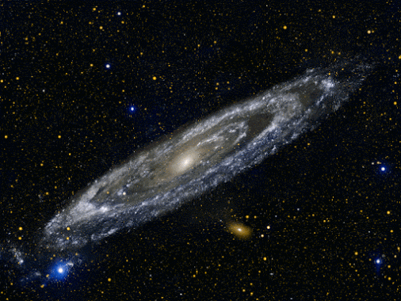

El Universo

El Universo es todo lo que podemos tocar, sentir, percibir, medir o detectar. Abarca los cosas vivas, los planetas, las estrellas, las galaxias, las nubes de polvo, la luz e incluso el tiempo. Antes de que naciera el Universo, no existían el tiempo, el espacio ni la materia.
El Universo contiene miles de millones de galaxias, cada una con millones o miles de millones de estrellas. El espacio entre las estrellas y las galaxias está en gran parte vacío. No obstante, incluso en sitios alejados de las estrellas y los planetas hay partículas dispersas de polvo o unos pocos átomos de hidrógeno por centímetro cúbico. El espacio también está lleno de radiación (por ejemplo, luz y calor), campos magnéticos y partículas de alta energía (como los rayos cósmicos).
El Universo es increíblemente grande. Un avión caza actual tardaría más de un millón de años en llegar a la estrella más cercana al Sol. Si viajara a la velocidad de la luz (300.000 km por segundo), tardaría 100.000 años sólo en cruzar nuestra Vía Láctea.
Nadie conoce el tamaño exacto del Universo, porque somos incapaces de ver el borde, si es que lo tiene. Todo lo que sabemos es que el Universo visible tiene al menos 93.000 millones de años luz de ancho (un año luz es la distancia que la luz recorre en un año, por lo tanto, unos 9 billones de km).
El Universo no ha sido siempre del mismo tamaño. Los científicos creen que se inició con un Big Bang, que sucedió hace unos 14.000 millones de años. Desde entonces, el Universo se ha estado expandiendo a gran velocidad. Por lo tanto, la zona de espacio que ahora vemos es miles de millones de veces más grande que cuando el Universo era muy joven. Las galaxias también se alejan entre sí a medida que se expande el espacio entre ellas.
BIG BANG

también llamada la Gran Explosión (término proveniente del astrofísico Fred Hoyle, a modo de burla de la teoría)3nota 1 y originalmente como Átomo primigenio (término del astrofísico y sacerdote Georges Lemaître),5 el principio del universo, es decir, el punto inicial en el que se formó la materia, el espacio y el tiempo. De acuerdo con el modelo cosmológico estándar, el Big Bang tuvo lugar hace unos 13 800 millones de años.6
Pese al nombre, el Big Bang no se refiere a una "explosión" en un espacio ya existente, sino que designa la expansión y creación conjunta de materia, espacio y tiempo, a partir de lo que se conoce como una singularidad, es decir, un punto al que matemáticamente nos podemos acercar más y más, pero sin llegar a él. Para entenderlo, uno debe imaginarse el desarrollo del universo en expansión en sentido temporal inverso retrocediendo hacia el pasado, donde el universo se va haciendo cada vez más pequeño pero la cantidad de materia es la misma, de manera que la densidad va aumentando hasta llegar al punto en el que la densidad de materia y energía se hace infinita y obviamente, superior a la densidad de Planck.7 Esto significa que las ecuaciones fallan porque matemáticamente no es posible tratar números infinitos. Y el proceso no se puede explicar. En este estado, la teoría de la relatividad general carece de validez y para explicar la situación del universo en ese momento habría que recurrir a una teoría, aún desconocida, de gravedad cuántica. De ahí que la física actual no conozca ninguna explicación sobre qué ocurrió «antes» del Big Bang ni del propio Big Bang, ya que no hay tiempo «antes» del inicio del tiempo,2 aunque existen hipótesis al respecto (por ejemplo el modelo cíclico Big Bounce).
El Misterio Del Universo Oscuro

Cuando se estima que el universo se constituye en un 73 % de energía oscura, 23 % de materia másica
oscura y 4 % de materia bariónica o en forma de átomos, de conocerse esa materia oscura que se rastrea
tanto en laboratorios desde el espacio como en complejos subterráneos, la astronomía podría dar origen a
una revolución comparable a la de tránsito del Medioevo al Renacimiento, en tiempos de Nicolás Copérnico
(1473-1543) quien sustituye el modelo geocéntrico por el heliocéntrico que consideraba la Tierra centro del
universo, o la de hace un siglo cuando el universo pasa a describirse como un todo mediante la teoría de la
gravitación de Albert Einstein (1879-1955) que sustituye la gravedad Newtoniana por la curvatura del
espacio-tiempo cuya expansión relativista descubre Edwin Hubble (1889-1953) observando los espectros de
extrañas nebulosas, que resultan ser otras galaxias ubicadas más allá de la Vía Láctea, alejándose de
nosotros a velocidades crecientes.
Pero ¿en qué anda la Cosmología moderna?: primerio, tenemos las teorías de Stephen Hawking (1942),
quien intenta aunar la relatividad general con la teoría cuántica, e instituye ideas sobre los agujeros negros y
el origen del tiempo, en las que argumenta que el universo no tiene bordes y propone el tiempo imaginario,
al sostener que en lugar de una singularidad del espacio-tiempo forman una superficie cerrada sin fronteras.
Y segundo, la hipotética existencia de una materia oscura que no emite radiación alguna, inferida de las
observaciones fundamentales de la astrónoma estadounidense Vera Rubin (1928-2016), pionera en la
medición de la rotación anómala de las estrellas dentro de una galaxia, ya que si en el Sistema Solar según
las leyes de Newton y Kepler la velocidad de rotación planetaria decrece conforme aumenta la distancia al
Sol como centro de masa, mientras en las galaxias se mantiene.